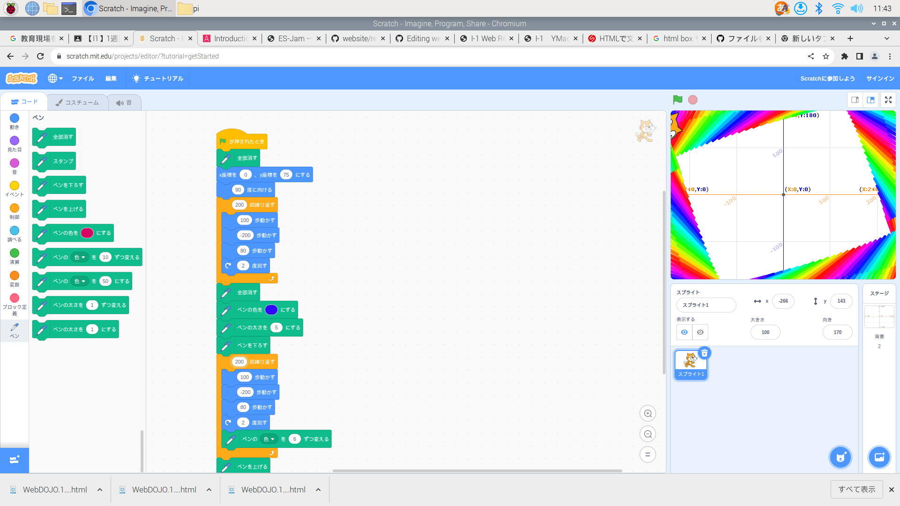

1週目のレポート ： 公大高専１年実習I-1
2B班39番 YMaoi
第1週目
1-1 サイエンスアート

1.内容
スクラッチを使って線を書くプログラムを作成し、幾何学的なアートを作り上げる。
2.感想
スクラッチを使って初めてプログラミングをしたが、猫が予想外の動きをして驚いた。
数値やコマンドを少しでも変えてしまうと、全く別の動きをするので、その度とても不思議なアートができた。
1-2 ゲーム
1.内容
スクラッチを使って、ゲームをプログラミングする。
2.感想
私は、プログラミングを何度かしたことがあるが、やはり思うように動かないことがいくつか出てきた。
これをプログラムのエラーと捉え、予想を立てつつコマンドを組みなおしていくことがとても楽しく感じた。
1-3 ホームページ作成
私のホームページ
1.内容
htmlを使って、自分のホームページを作る。
2.感想
私はhtmlにかなりの間触れていなかったので、改めて仕組みを知ることができて興味深く感じた。